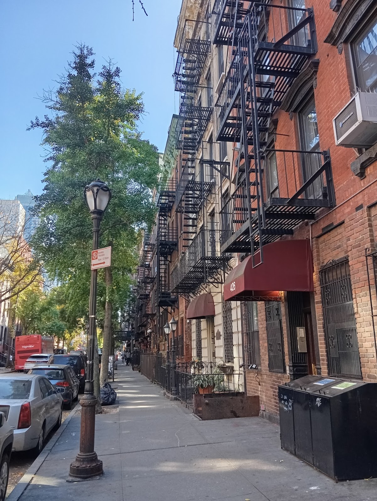
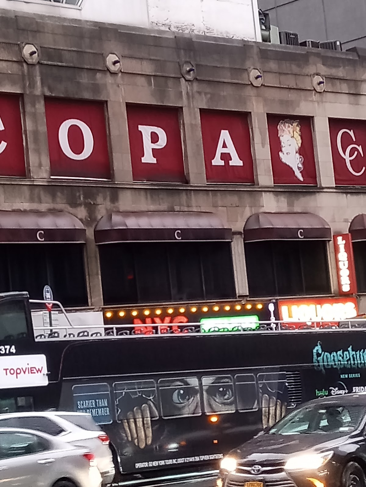
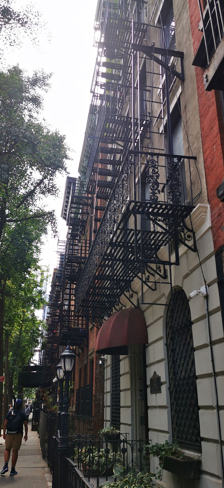
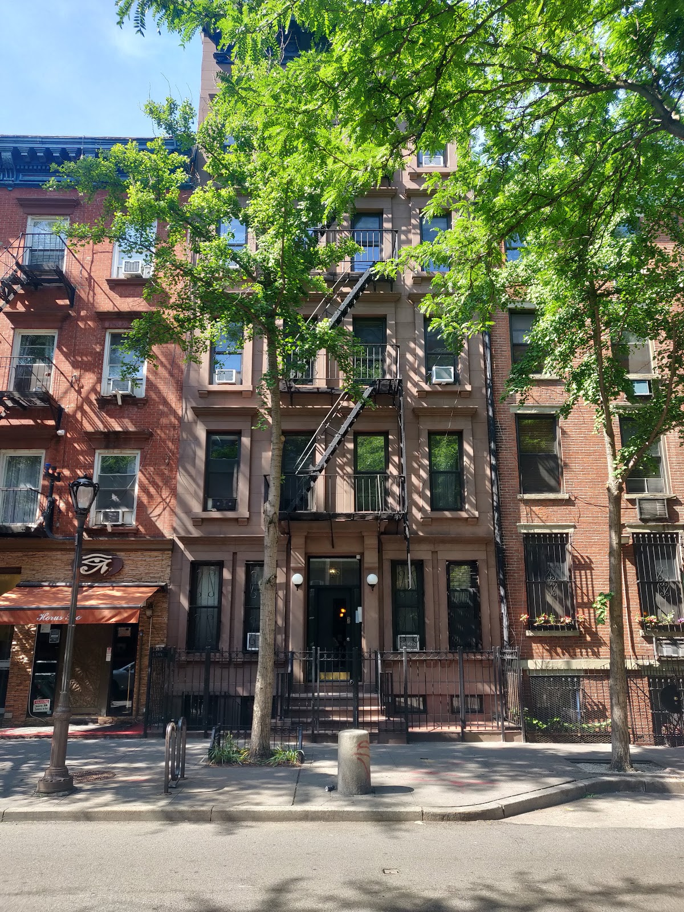
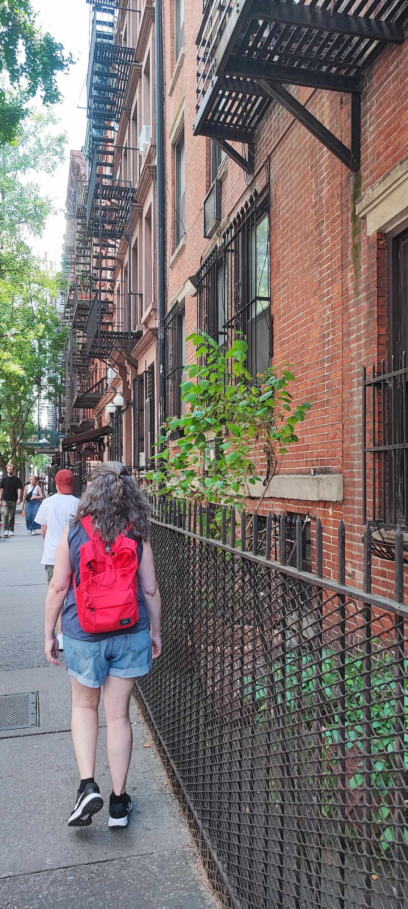

Courts & communities
Clinton Court
A secluded courtyard and former carriage house behind West 46th Street in Hell's Kitchen. The small interior space sits behind the buildings facing the street.
Background
City Tech's architectural library describes the courtyard as barely visible from the street. The narrow passage and the contrast between the interior court and surrounding buildings are the points to notice; the residential courtyard is not a public attraction.
Sources
Homes and shared residential spaces may be private. View from public streets unless entry is clearly permitted; map pins are reference points, not confirmed entrances.
Nearby places
- Broadway Between 40th and 17th0.6 mi ↗
- Track on the roof1.1 mi ↗
- Sniffen Court1.2 mi ↗
- Jones Wood Garden1.5 mi ↗
Straight-line distances, not walking routes.
Discussion & corrections





40.76128, -73.99211 · Explore the surrounding area ↗